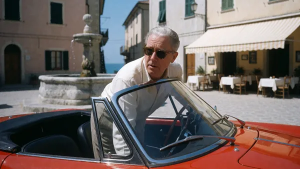
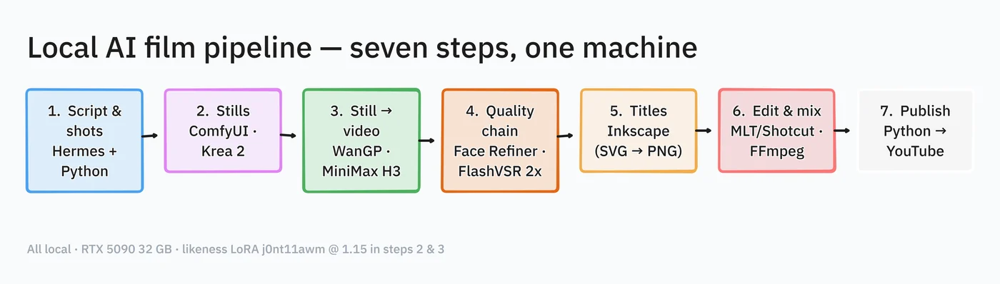
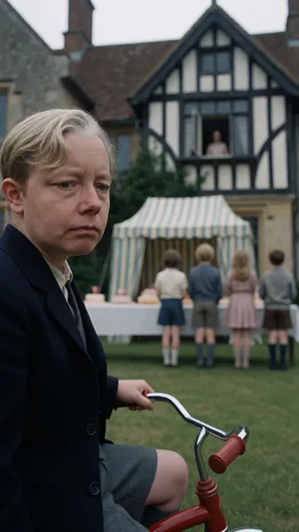
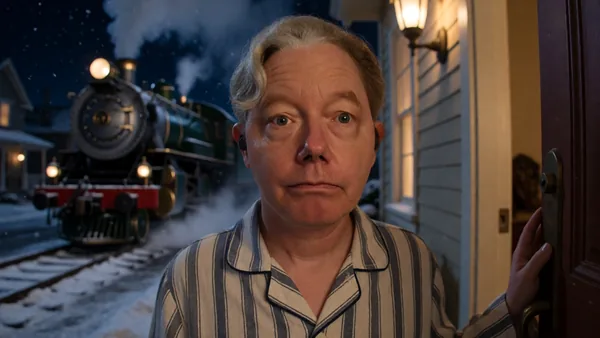
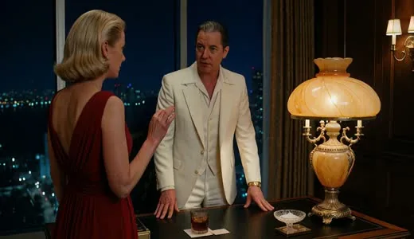
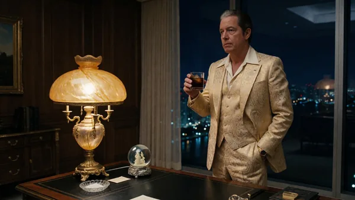
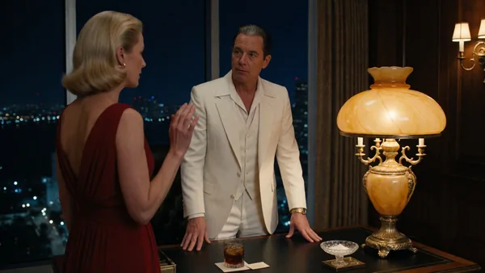
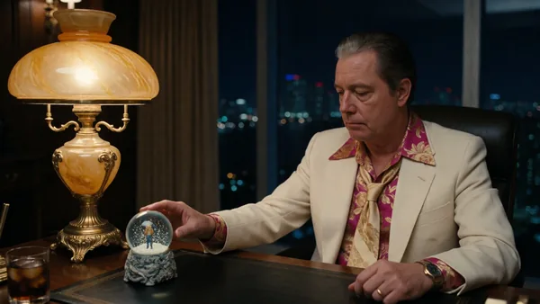
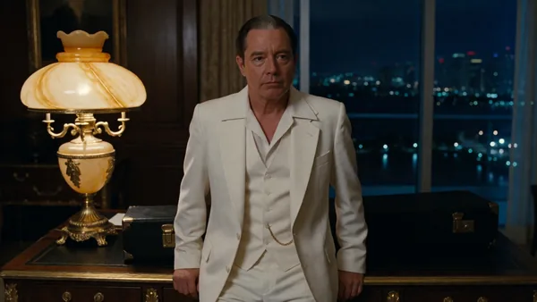
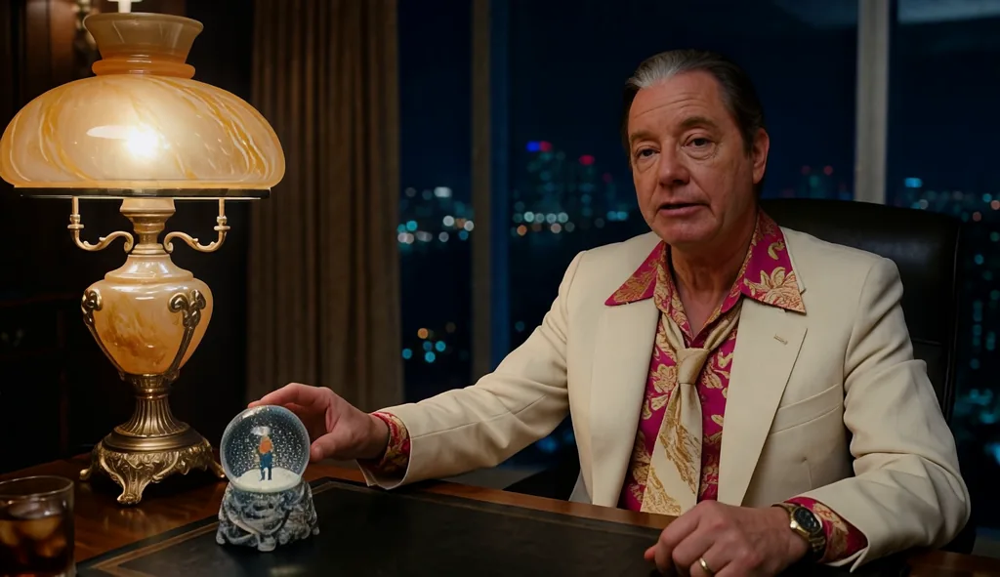

Personal project · Jon Tojek · September 2026
Four of them so far, all pastiches. The scene gets picked in a chat window. Everything after that runs on one PC. This page is the process, in order.
All four, back to back
Ripley, The Omen, The Polar Express, Scarface. One minute forty-seven.
1664×960 master, 24 fps. Music bed: “Dub Eastern” by Kevin MacLeod (incompetech.com), CC BY 4.0.
Step one
This part is a conversation, and it is the only part done by hand. Some days I bring a scene. Some days I ask for ten and pick one.
Give me ten movie ideas where I can be the actor, replacing someone.
Ten scenes with one lead to replace, each one cuttable into three shots:
Do the Ripley one. The bit where Freddie jumps out of the red car and takes over the table.
Three shots, one line of dialogue each. Stills coming — three seeds per shot.
Take 2, take 3, take 1. Reroll the last one, the sunglasses are wrong.
Step two
Five stages, each one a script. Nothing moves forward until the last stage is approved. A stage that fails reruns on its own, never the whole film.
j0nt11awm, loaded at 1.15
strength. One still per shot gets picked and locked.
What drives it
Hermes is the agent. It reads the project files, runs every script above, checks its own output, and writes the notes. Behind it is Qwen 3.8 27B, quantised and running in LM Studio on the same machine as the renders. No API key, no per-token bill, nothing leaves the building.
Its rules sit in plain text beside the films — one file for the project, one per movie. A new film inherits what the last four established.
Four so far




The four stills movie 04 was built from — one approved frame per shot:




Why stage three exists
Same frame, same second of film. Left is what the video model returns. Right is after the face refiner and the 2× upscale.

Everything involved
| Job | Tool | Detail |
|---|---|---|
| Agent | Hermes | runs every script, writes every note |
| Model | Qwen 3.8 27B | local, LM Studio, Q4_K_M |
| Stills | Krea 2 Turbo | 1280×720, 8 steps |
| Clips and voice | MiniMax H3 | 832×480, 24 fps, 20 steps |
| Likeness | Fizgig | LoRA j0nt11awm @ 1.15 |
| Quality | Face Refiner + FlashVSR | 2× to 1664×960 |
| Titles | Inkscape | SVG frames → PNG sequence |
| Edit | MLT + Shotcut | headless render, 12f dissolves |
| Audio | FFmpeg | EBU R128, −15 LUFS |
| Hardware | RTX 5090 | 32 GB VRAM, one box |